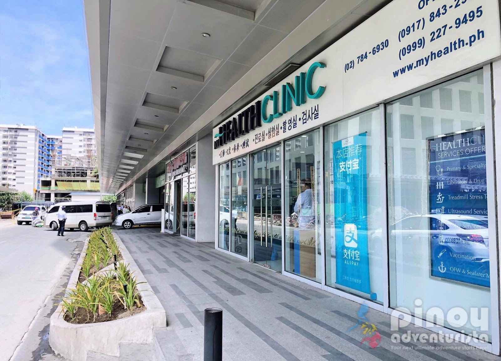

Years on serving the community
Successfull Appointment
Doctors On call
Our Services
Welcome to our clinic services! Our clinic is dedicated to providing comprehensive healthcare to individuals of all ages and backgrounds. We offer a wide range of services designed to promote your well-being and address your healthcare needs. Whether you require routine medical care, preventive services, specialized treatments, or diagnostic procedures, our team of skilled healthcare professionals is here to assist you.
Diagnostic Services
The Clinic offers a diagnostic services that helps to identify and evaluate health conditions.
Read morePrimary Care
The clinic provides a primary care services, which include general medical care for common illnesses and injuries. This can involve diagnosing and treating various health conditions, performing routine check-ups, and managing chronic diseases.
Read morePreventive Care
The Clinic offers a preventive care services aimed at promoting wellness and disease prevention.
Read moreSpecialized Care
The Clinic offers specialized diagnostic procedures, treatment options, and consultations related to their area of expertise.
Read moreGeneral Medical Consultations
The Clinic provides a consultations with doctors who diagnose and treat various medical conditions. These consultations may involve taking a patient's medical history, performing physical examinations, and providing appropriate medical advice or treatment.
Read moreReferral Services
If the clinic does not have the required expertise or resources to manage a particular condition, they may provide referral services. They can connect patients with specialists or hospitals that can offer the necessary care..
Read moreTestimonials
Welcome to our Testimonial Page! Here, we are proud to share the stories and experiences of our valued patients who have received exceptional care at our clinic. We believe that hearing directly from those who have entrusted us with their health is the best way to showcase the quality and compassion of our healthcare services.

Saul Goodman
I'm grateful for the exceptional care I received at Makiling Clinic. They not only treated my illness but also provided valuable preventive measures to keep me healthy in the long run.

Sara Wilsson
The urgent care services at Makiling Clinic were a lifesaver. I was seen quickly, and the staff was efficient and compassionate, making a stressful situation much more manageable.

Jena Karlis
I'm impressed by the expertise of the specialists at Makiling Clinic. They worked in collaboration with my primary care physician to provide me with comprehensive care and the best possible outcomes.

Matt Brandon
I'm impressed by the expertise of the specialists at Makiling Clinic. They worked in collaboration with my primary care physician to provide me with comprehensive care and the best possible outcomes.

John Larson
I can't thank Makiling Clinic enough for their outstanding care. They genuinely prioritize the health and happiness of their patients, and it shows in every aspect of their service.
Medical Team
Welcome to the dedicated medical team at Makiling clinic, where your well-being is our top priority. Our team of highly skilled and compassionate healthcare professionals is committed to providing exceptional care and support throughout your medical journey.
Jose De Leon
General SurgeonMarquee Macapagal
Speech PathologistsJuan Mactan
CardiologistAmanda Fernandez
AnesthesiologistAbout Us
Centrally located in the heart of Calamba, Makiling Clinic is Laguna’s premiere Health Center. Makiling Clinic is the one-stop Center. From the moment you arrive you will notice the warm welcome of staff ready to assist your every need, surely Makiling Clinic you will feel the loving care and attention of a family. Nowhere in Laguna will you find our combination of quality medical care, service and affordability. Makiling Clinic always understands your needs and is ready to provide you with quality healthcare and service.
Our history
Established in 2012, our clinic has been serving the community for over 11 years. We are proud to be one of the leading healthcare providers, dedicated to delivering exceptional medical care and promoting the well-being of our patients.
Our clinic was founded by Cyrix Pearl Comparativo, a visionary healthcare professional with a passion for improving the health outcomes of individuals in our community. Inspired by a commitment to compassionate care, our founder embarked on a mission to establish a clinic that would provide comprehensive medical services and personalized attention to every patient